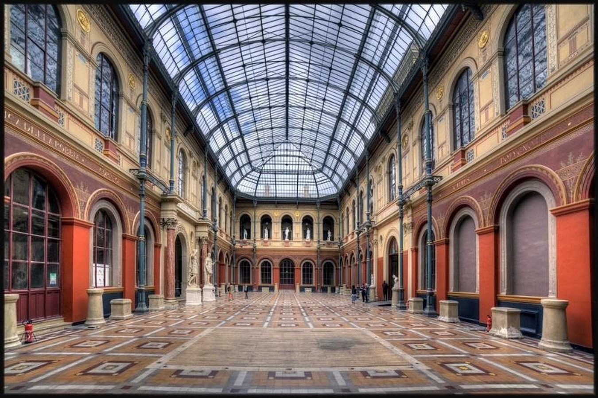
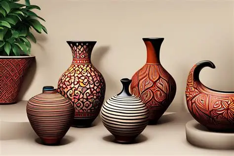
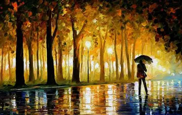

Article
This article is about the group of creative disciplines. For the concept of art, see Art.
"Arts" redirects here. For the acronym, see ARTS.
The arts, or creative arts, are a vast range of human practices involving creative expression, storytelling, and cultural participation. The arts encompass diverse and plural modes of thought, deeds, and existence in an extensive range of media. Both a dynamic and characteristically constant feature of human life, the arts have developed into increasingly stylized and intricate forms. This is achieved through sustained and deliberate study, training, or theorizing within a particular tradition, generations, and even between civilizations. The arts are a medium through which humans cultivate distinct social, cultural, and individual identities while transmitting values, impressions, judgments, ideas, visions, spiritual meanings, patterns of life, and experiences across time and space.
The arts are divided into three main branches: visual arts, literature, and performing arts. Examples of visual arts include architecture, ceramic art, drawing, filmmaking, painting, photography, and sculpture. Examples of literature include fiction, drama, poetry, and prose. Examples of performing arts include dance, music, and theatre. The arts can employ skill and imagination to produce physical objects and performances, convey insights and experiences, and construct new natural environments and spaces.
The arts can refer to common, popular, or everyday practices as well as more sophisticated, systematic, or institutionalized ones. They can be discrete and self-contained or combine and interweave with other art forms, such as combining artwork with the written word in comics. Art forms can also develop or contribute to aspects of more complex art forms, as in cinematography. By definition, the arts themselves are open to being continually redefined. The practice of modern art, for example, is a testament to the shifting boundaries, improvisation and experimentation, reflexive nature, and self-criticism or questioning that art and its conditions of production, reception, and possibility can undergo.
As both a means of developing capacities of attention and sensitivity and ends in themselves (art for art's sake), the arts can be a form of response to the world. It is a way to transform human responses and what humans deem worthwhile goals or pursuits. From prehistoric cave paintings during the Upper Palaeolithic, to ancient and contemporary forms of rituals, to modern-day films, the arts have registered, embodied, and preserved the ever-shifting relationships of humans with each other and the world.
Visual Arts
Visual art forms include architecture, ceramic art, crafts, design, drawing, filmmaking, image, painting, photography, printmaking, sculpture, and video. Many artistic disciplines such as performing arts, conceptual art, and textile arts, also involve aspects of the visual arts, as well as arts of other types. Within the visual arts, the applied arts, such as industrial design, graphic design, fashion design, interior design, and decorative arts are also included.
Architecture
Architecture is the art and science of designing buildings and structures. Some definitions include the wider design of the built environment, from the macro level of urban planning, urban design, and landscape architecture, to the micro level of creating furniture. Architectural design usually must address feasibility and cost for the builder, as well as function and aesthetics for the user.
In modern usage, architecture is the art and discipline of creating or inferring an implied or apparent plan for a complex object or system. Some types of architecture manipulate space, volume, texture, light, shadow, or abstract elements, to achieve pleasing aesthetics. Architectural works may be seen as cultural and political symbols or works of art. The role of architects, though changing, has been central to the design and implementation of pleasingly built environments in which people live.

Ceramic art
Ceramic art is art made from ceramic materials, which may take forms such as pottery, tiles, figurines, sculptures, and tableware. While some ceramic products are considered fine art, others are considered decorative, industrial, or applied art objects. Ceramics may also be considered artefacts in archaeology. People design, manufacture, and decorate pottery in pottery or ceramic factories. Some pottery is regarded as art pottery. In one-person pottery studios, ceramists or potters produce studio pottery. Ceramics exclude glass and mosaics made from glass tesserae.

Drawing
Drawing is a means of making an image using various tools and techniques. It generally involves making marks on a surface by applying pressure from a tool, or moving a tool across a surface. Common tools are graphite pencils, pen and ink, inked brushes, wax coloured pencils, crayons, charcoals, pastels, and marker pens. Digital tools with similar effects are also used. The main techniques used in drawing are line drawing, hatching, cross-hatching, random hatching, scribbling, stippling, and blending. An artist who excels in drawing is referred to as a drafter, draftswoman, or draughtsman. Drawing can be used to create art used in cultural industries such as illustrations, comics, and animation. Comics are often called the "ninth art" (le neuvième art) in Francophone scholarship, adding to the traditional "Seven Arts".

Painting
Painting is considered to be a form of self-expression. Drawing, gesture (as in action painting), composition, narration (as in narrative art), or abstraction (as in abstract art), among other aesthetic modes, may serve to manifest the expressive and conceptual intention of the practitioner. Paintings can be on a wide variety of topics, such as photographic, abstract, narrative, symbolistic (symbolism), emotive (Expressionism), or political in nature (artivism). Some modern painters, such as Jean Dubuffet or Anselm Kiefer, incorporate different materials, such as sand, cement, straw, wood, or strands of hair, for their artwork texture.
